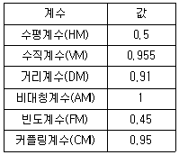
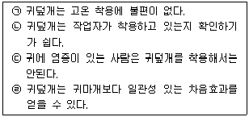
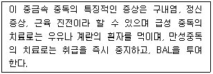
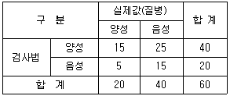

산업위생관리기사 (2010-05-09 기출문제)
1과목: 산업위생학개론
1. 다음 중 재해발생의 경중 또는 정도를 가장 잘 나타내는 재해지표는?
- 강도율
- 중독율
- 도수율
- 이환율
(정답률: 85%)

2. 미국산업위생학회 등에서 산업위생전문가들이 지켜야 할 윤리강령을 채택한 바 있는데 다음 중 전문가로서의 책임에 해당되지 않는 것은?
- 전문 분야로서의 산업위생 발전에 기여한다.
- 위험요인의 측정, 평가 및 관리에 있어서 외부의 압력에 굴하지 않고 중립적 태도를 취한다.
- 근로자, 사회 및 전문분야의 이익을 위해 과학적 지식을 공개한다.
- 기업체의 기밀은 누설하지 않는다.
(정답률: 66%)
3. 다음 중 누적외상성 질환(Cumulative Trauma Disorders, CTDs) 또는 근골격계질환(Muscoloskeletal disorders, MSDs) 에 속하는 질환으로 보기 어려운 것은?
- 건초염(Tendosynovitis)
- 스티븐스존슨증후군(Stevens johnson syndrome)
- 손목뼈터널증후군(Carpal tunnel syndrome)
- 기용터널증후군(Guyon tunnel syndrome)
(정답률: 90%)
4. 다음 중 산업안전보건법에 따른 사업주의 의무로 적절하지 않은 것은?
- 산업재해 예방을 위한 기준 준수
- 근로조건 개선을 통하여 적절한 작업환경 조성
- 해당 사업장의 안전·보건에 관한 정보를 근로자에게 제공
- 안전·보건을 위한 기술의 연구·개발 및 시설의 설치·운영
(정답률: 88%)
5. 화학물질 및 물리적인자의 노출기준에 있어 2종 이상의 화학물질이 공기 중에 혼재하는 경우에는 유해성이 인체의 서로 다른 조직에 영향을 미치는 근거가 없는 한 유해물질들 간의 상호작용은 다음 중 어떤 것으로 간주하는가?
- 상승작용
- 강화작용
- 상가작용
- 길항작용
(정답률: 75%)
6. 다음 중 하인리히의 사고예방대책의 기본원리 5단계를 올바르게 나타낸 것은?
- 조직→사실의 발견→분석·평가→시정책의 선정→시정책의 적용
- 조직→분석·평가→사실의 발견→시정책의 선정→시정책의 적용
- 사실의 발견→조직→분석·평가→시정책의 선정→시정책의 적용
- 사실의 발견→조직→시정책의 선정→시정책의 적용→분석·평가
(정답률: 93%)
7. 다음 중 작업을 마친 직후 회복기의 심박수를 측정한 결과 심한 전신피로 상태라 판단될 수 있는 경우는?
- HR30-60 이 100 미만이고, HR60-90 과 HR150-180 의 차이가 20 이상인 경우
- HR30-60 이 100 초과하고, HR60-90 과 HR150-180 의 차이가 20 미만인 경우
- HR30-60 이 110 미만이고, HR60-90 과 HR150-180 의 차이가 10 이상인 경우
- HR30-60 이 110 초과하고, HR60-90 과 HR150-180 의 차이가 10 미만인 경우
(정답률: 88%)
8. 다음 표를 이용하여 개정된 NIOSH의 들기작업 권고기준에 따른 권장무게한계(RWL)는 약 얼마인가?

- 4.27kg
- 8.55kg
- 12.82kg
- 21.36kg
(정답률: 68%)
9. 다음 중 직업성 피부질환에 대한 설명으로 틀린 것은?
- 대부분은 화학물질에 의한 접촉피부염이다.
- 정확한 발생빈도와 원인물질의 추정은 거의 불가능하다.
- 접촉피부염의 대부분은 알레르기에 의한 것이다.
- 직업성 피부질환의 간접요인으로는 인종, 연령, 계절 등이 있다.
(정답률: 81%)
10. 다음 중 산업피로의 예방대책으로 적절하지 않은 것은?
- 휴식시간은 짧고 반복적이기 보다 한 번에 장시간을 취하도록 한다.
- 너무 정적인 작업은 동적인 작업으로 전환한다.
- 작업환경을 정리, 정돈한다.
- 작업 부하량과 작업 속도를 개인에 따라 조정한다.
(정답률: 93%)
11. 산업위생활동 중 평가(Evaluation)에 관한 설명으로 틀린 것은?
- 시료를 채취하고 분석한다.
- 예비조사의 목적과 범위를 결정한다.
- 현장조사로 정량적인 유해인자의 양을 측정한다.
- 바람직한 작업환경을 만드는 최종적인 활동이다.
(정답률: 54%)
12. 사무실 공기관리 지침에서 정한 사무실 공기의 오염물질에 대한 시료채취시간이 올바르게 연결된 것은?
- 미세먼지 : 업무시간동안 4시간 이상 연속 측정
- 포름알데히드 : 업무시간동안 4시간 이상 연속 측정
- 일산화탄소 : 업무시작 후 1시간 이내 및 종료 전 1시간 이내 각각 10분간 측정
- 이산환탄소 : 업무시작 후 1시간 전후 및 종류 전 1시간 전후 각각 20분간 측정
(정답률: 67%)
13. 다음 중 규폐증을 일으키는 원인물질은?
- 면분진
- 석탄분진
- 유리규산
- 납흄
(정답률: 62%)
14. 에틸벤젠(TLV=100ppm)을 사용하는 작업장의 작업시간이 9시간일 때에는 허용기준을 보정하여야 한다. OSHA 보정방법과 Brief and Scala 보정방법을 적용하였을 때 두 보정된 허용기준치 간의 차이는 약 얼마인가?
- 2.2ppm
- 3.3ppm
- 4.2ppm
- 5.6ppm
(정답률: 72%)
15. 방사성 기체로 폐암 발생의 원인이 되는 실내공기 중 오염물질은?
- 포름알데히드
- 라돈
- 석면
- 오존
(정답률: 87%)
16. 다음 중 산업안전보건법상 “충격소음작업”에 해당하는 것은? (단, 작업은 소음이 1초 이상의 간격으로 발생한다.)
- 120데시벨을 초과하는 소음이 1일 1만회 이상 발생되는 작업
- 125데시벨을 초과하는 소음이 1일 1천회 이상 발생되는 작업
- 130데시벨을 초과하는 소음이 1일 1백회 이상 발생되는 작업
- 140데시벨을 초과하는 소음이 1일 10회 이상 발생되는 작업
(정답률: 90%)
17. 다음 중 역사상 최초로 기록된 직업병은?
- 수은중독
- 음낭암
- 규폐증
- 납중독
(정답률: 85%)
18. 다음 중 심리학적 적성검사에서 지능검사 대상에 해당하는 항목은?
- 직무에 관련된 기본지식과 숙련도, 사고력
- 언어, 기억, 추리, 귀납
- 수족협조능, 운동속도능, 형태지각능
- 성격, 태도, 정신상태
(정답률: 88%)
19. 사이또와 오시마가 제시한 관계씩을 기준으로 작업대사율이 7인 경우 계속작업의 한계시간은 약 얼마인가?
- 5분
- 10분
- 20분
- 30분
(정답률: 49%)
20. 근육이 운도을 시작하면 필요한 에너지를 여러 가지 방법에 의하여 공급받게 되는데, 가장 먼저 에너지를 공급하기 시작하는 것은 무엇인가?
- 아데노신 삼인산(ATP)
- 크레아틴 인산(CP)
- 글리코겐
- 포도당
(정답률: 82%)
2과목: 작업위생측정 및 평가
21. 소음 단위인 데시벨(dB)을 계산하기 위한 최소음압실효치가 P0=0.00002 N/m2 이고, 대상음음압실효치가 10 N/m2 라면 이 음압수준은?
- 94 dB
- 104 dB
- 114 dB
- 124 dB
(정답률: 74%)
22. 활성탄관의 흡착특성에 대한 설명으로 옳지 않은 것은?
- 메탄, 일산화탄소 같은 가스는 잘 흡착되지 않는다.
- 끓는 점이 낮은 암모니아, 에틸렌, 포름알데하이드 증기는 흡착 속도가 높지 않다.
- 유기용제 증기, 수은증기와 같이 상대적으로 무거운 증기는 잘 흡착 된다.
- 탈착용매로 유독한 이황화탄소를 쓰지 않는다.
(정답률: 75%)
23. 직경 분립 충돌기(cascade impactor, 일명 Anderson impactor라고도 함)의 특성을 설명한 것으로 옳지 않은 것은?
- 입자의 질량크기 분포를 얻을 수 있다.
- 공기가 유입되지 않도록 각 충돌기의 철저한 조립과 장착이 필요하다.
- 매체의 코팅과 같은 별도의 특별한 준비 및 처리가 필요 없다.
- 흡입성(inspirable), 흉곽성(thoracic), 호흡성(respirable) 입자의 크기별 분포를 얻을 수 있다.
(정답률: 81%)
24. 어떤 작업장에서 일산화탄소(CO) 농도를 측정한 결과가 16ppm, 15ppm, 9ppm, 6ppm, 4ppm, 3ppm, 6ppm 으로 나타났을 때 기하 평균농도는?
- 6.2ppm
- 6.6ppm
- 7.1ppm
- 7.8ppm
(정답률: 82%)
25. 유도결합 플라즈마-원자발광분석기(ICP-AES)에 관한 설명으로 옳지 않은 것은??
- 원자들은 높은 온도에서 복사선을 방출하므로 분광학적 방해 영향이 없다.
- 검량선의 직선성 범위가 넓다.
- 화학물질에 의한 방해로부터 거의 영향을 받지 않는다.
- 원자흡광광도계보다 더 좋거나 적어도 같은 정밀도를 갖는다.
(정답률: 63%)
26. 가스의 정의와 주요 특성에 관한 설명과 가장 거리가 먼 것은?
- 상온, 상압(보통 25℃, 1기압)에서 기체 형태로 존재하는 것
- 공간을 완전하게 다 채울 수 있는 물질
- 가스는 농도가 높으면 응축됨
- 공기의 구성성분인 질소, 산소, 아르곤, 이산화탄소, 헬륨, 수소는 모두 가스임
(정답률: 62%)
27. 금속제품을 탈지 세정하는 공정에서 사용하는 trichloro-ethylene의 근로자 노출 정도를 측정하고자 한다. 과거 측정 결과 평균농도는 40ppm 이고 활성탄관(100mg/50mg)을 이용하여 0.1ℓ/분으로 채취하였다. GC의 정량한계(LOQ)가 시료당 0.5mg이라면 이 때 채취해야 할 최소 시간은? (단, 1기압, 25℃, trichloro-ethylene의 분자량은 131.39)
- 12.5분
- 18.8분
- 21.7분
- 23.3분
(정답률: 62%)
28. 다음은 공기유량을 보정하는데 사용하는 표준기구들이다. 다음 중 1차 표준기구에 포함되지 않는 것은?
- 비누거품미터
- 폐활량계
- 가스치환병
- 로타미터
(정답률: 93%)
29. 에틸렌 글리콜이 20℃, 1기압에서 증기압이 0.⑤ mmHg 라면 공기 중 포화농도(ppm)는?
- 29
- 47
- 66
- 83
(정답률: 85%)
30. 입경이 50μm 이고 입자비중이 1.5인 입자의 침강속도는? (단, 입경이 1~50μm인 먼지의 침강속도를 구하기 위해 산업위생분야에서 주로 사용하는 식 적용)
- 약 3.25cm/sec
- 약 5.45cm/sec
- 약 8.65cm/sec
- 약 11.25cm/sec
(정답률: 77%)
31. 어떤 작업장에서 하이 볼륨 시료채취기(High volume sampler)를 1.1m3/분의 유속에서 1시간 30분간 작동 시킨 후, 여과지(filter paper)에 채취된 납 성분을 전처리과정을 거쳐 산(acid)과 증류수 용액 100mL에 추출하였다. 이 용액의 7.5mL를 취하여 250mL 용기에 넣고 증류수를 더하여 250mL가 되게 하여 분석한 결과 9.80mg/L 이었다. 작업장 공기 내의 납 농도는 몇 mg/m3인가? (단, 납의 원자량은 207, 100% 추출된다고 가정한다.)
- 0.08
- 0.16
- 0.33
- 0.48
(정답률: 46%)
32. 작업환경의 습구 온도를 측정하는 기기와 측정시간 기준으로 옳은 것은? (단, 노동부 고시 기준)
- 0.1도 간격의 눈금이 있는 아스만통풍건습계 – 5분 이상
- 0.1도 간격의 눈금이 있는 아스만통풍건습계 – 25분 이상
- 0.5도 간격의 눈금이 있는 아스만통풍건습계 – 5분 이상
- 0.5도 간격의 눈금이 있는 아스만통풍건습계 – 25분 이상
(정답률: 66%)
33. ACGIH에서는 입자상물질을 크게 흡입성, 흉곽성, 호흡성으로 제시하고 있다. 다음 설명 중 옳은 것은?
- 흡입성 먼지는 기관지계나 폐포 어느 곳에 침착하더라도 유해한 입자상 물질로 보통 입자크기는 1~10μm 이내의 범위이다.
- 흉곽성 먼지는 가스교환부위인 폐기도에 침착하여 독성을 나타내며 평균 입자크기는 50μm이다.
- 흉곽성 먼지는 호흡기계 어느 부위에 침착하더라도 유해한 입자상 물질이며 평균입자크기는 25μm이다.
- 호흡성 먼지는 폐포에 침착하여 독성을 나타내며 평균 입자크기는 4μm이다.
(정답률: 82%)
34. 통계집단의 측정값들에 대한 균일성과 정밀성의 정도를 표현하는 것으로 평균값에 대한 표준편차의 크기를 백분율로 나타낸 것은?
- 정확도
- 변이계수
- 신뢰편차율
- 신뢰한계율
(정답률: 89%)
35. 작업환경측정방법 중 시료채취 근로자 수에 관한 기준으로 옳지 않은 것은? (단, 노동부 고시 기준)
- 단위작업장소에서 최고 노출근로자 2명 이상에 대하여 동시에 측정한다.
- 동일 작업 근로자 수가 10명을 초과하는 경우에는 매 5명당 1인(1개 지점) 이상 추가하여 측정하여야 한다.
- 동일 작업 근로자 수가 100명을 초과하는 경우에는 최대 시료 채취 근로자수를 10명으로 조정할 수 있다.
- 지역시료채취를 시행할 경우 단위작업장소의 넓이가 50평방미터 이상인 경우에는 매 30 평방미터 마다 1개 지점 이상을 추가로 측정하여야 한다.
(정답률: 77%)
36. ‘우발오차’에 관한 설명으로 옳지 않은 것은?
- 우발오차가 작을 때는 정밀하다고 말한다.
- 실험자가 주의하면 오차의 제거 또는 보정이 용이하다.
- 측정횟수를 될 수 있는 대로 많이 하여 오차의 분포를 살쳐 가장 확실한 값을 추정할 수 있다.
- 한가지 실험 측정을 반복할 때 측정값들이 변동으로 발생되는 오차이다.
(정답률: 52%)
37. 고유량 공기 채취펌프를 수동 무마찰 거품관으로 보정하였다. 비누방울이 500m3의 부피(V)까지 통과하는데 15.5초(T) 걸렸다면 유량(Q)은 약 몇 L/min 인가?(오류 신고가 접수된 문제입니다. 반드시 정답과 해설을 확인하시기 바랍니다.)
- 1.94
- 3.12
- 7.81
- 9.33
(정답률: 49%)
38. 소음측정 방법에 관한 설명으로 옳지 않은 것은? (단, 노동부 고시 기준)
- 소음계의 청감보정회로는 A특성으로 행하여야 한다.
- 연속음 측정시 소음계의 지시침의 동작은 빠른(Fast) 상태로 한다.
- 소음수준을 측정할 때는 측정대상이 되는 근로자의 근접된 위치의 귀 높이에서 실시하여야 한다.
- 측정시간은 1일 작업시간동인 6시간 이상 연속측정 하거나 작업시간을 1시간 간격으로 나누어 6회 이상 측정한다.
(정답률: 84%)
39. 유리규산을 채취하여 X-선 회절법으로 분석하는데 적절하고 6가 크롬 그리고 아연화합물의 재취에 이용하며 수분에 영향이 크지 않아 공해성 먼지, 총먼지 등의 중량분석을 위한 측정에 사용하는 막여과지로 가장 적합한 것은?
- MCE 막여과지
- PVC 막여과지
- PTFE 막여과지
- 은 막여과지
(정답률: 81%)
40. 분석기기가 검출할 수 있고 신뢰성을 가질 수 있는 양인 정량한계(LOQ)에 관한 설명으로 옳은 것은?
- 표준편차의 3배
- 표준편차의 3.3배
- 표준편차의 5배
- 표준편차의 10배
(정답률: 72%)
3과목: 작업환경관리대책
41. 밀어당김형 후드(push-pull hood)에 의한 환기로서 가장 효과적인 경우는?
- 오염 발산원이 먼 경우
- 오염 발산농도가 높은 경우
- 오염 발산량이 많은 경우
- 오염 발산폭이 넓은 경우
(정답률: 84%)
42. 1기압, 온도 15℃ 조건에서 속도압이 50mmH2O 일 때 기류의 유속은? (단, 15℃, 1기압에서 공기의 밀도는 1.225kg/m3이다.)
- 24.4 m/sec
- 26.1 m/sec
- 28.3 m/sec
- 29.6 m/sec
(정답률: 74%)
43. 사무실에서 일하는 근로자의 건강장해를 예방하기 위해 시간당 공기교환횟수는 6회 이상 되어야 한다. 사무실의 체적이 125m3 일 때 최소 필요한 환기량은?
- 360 m3/시간
- 450 m3/시간
- 600 m3/시간
- 750 m3/시간
(정답률: 70%)
44. 유해작업환경에 대한 개선 대책 중 대치(substitution)방법에 대한 설명으로 옳지 않은 것은?
- 아조염료의 합성에 디클로로벤지딘 대신 벤지딘을 사용한다.
- 분체 입자를 큰 것을 바꾼다.
- 야광시계의 자판을 라듐 대신 인을 사용한다.
- 금속세척작업시 TCE 대신에 계면활성제를 사용한다.
(정답률: 91%)
45. 유체관을 흐르는 유체의 총압(전압)이 –75 mmH2O 이고 정압이 –100 mmH2O 이면 유체의 유속(m/min)은? (단, 20℃ 1기압 상태의 공기임)
- 약 860 m/min
- 약 1⑤0 m/min
- 약 1210 m/min
- 약 1520 m/min
(정답률: 66%)
46. 작업환경 내 설치된 후드의 유입계수가 0.79이고 후드의 압력손실이 20 mmH2O 라면 속도압(mmH2O)은?
- 19.4
- 27.6
- 33.2
- 42.8
(정답률: 67%)
47. 덕트 합류시 설계에 의한 정압균형 유지 방법의 장단점으로 옳지 않은 것은?
- 최대 저항 경로 선정이 잘못된 경우에는 설계시 쉽게 발견하기 어려움
- 설계가 복잡하고 시간이 걸림
- 균형이 유지되려면 설계도면에 있는 대로 덕트가 설치되어야 함
- 임의로 유량을 조절하기 어려움
(정답률: 50%)
48. 사업장에서 취급하는 화학물질에 적합한 보호장구의 재질에 대한 설명으로 옳지 않은 것은?
- Butyl 고무재질의 보호장구는 극성용제를 취급할 경우에 효과적으로 사용할 수 있다.
- Ethylene Vinyl Alcohol 재질의 보호장구는 대부분의 화학물질을 취급할 경우에 효과적으로 사용할 수 있다.
- 천연고무(latex)재질의 보호장구는 비극성 용제를 취급하는 경우에 효과적으로 사용할 수 있다.
- Neoprene 고무재질의 보호장구는 비극성 용제, 산, 부식성 물질 등을 취급하는 경우에 효과적으로 사용할 수 있다.
(정답률: 72%)
49. 외부식 후드의 경우, 필요 송풍량을 가장 적게 할 수 있는 모양은?
- 플렌지가 없고 적절한 공간이 있는 모양
- 플렌지가 없고 면에 고정된 모양
- 플렌지가 있고 적절한 공간이 있는 모양
- 플렌지가 있고 면에 고정된 모양
(정답률: 72%)
50. 원심력송풍기 중 전향 날개형 송풍기에 관한 설명으로 옳지 않은 것은?
- 송풍기의 임펠러가 다람쥐 쳇바퀴 모양이며 회전날개가 회전방향과 반대방향으로 설계되어 있다.
- 동일 송풍량을 발생시키기 위한 임펠러 회전속도가 상대적으로 낮아 소음문제가 거의 발생하지 않는다.
- 이송시켜야 할 공기량은 많으나 압력손실이 적게 걸리는 전체환기나 공기 조화용으로 사용된다.
- 높은 압력손실에서 송풀양이 급격하게 떨어진다.
(정답률: 68%)
51. 국소배기장치에서 공기공급 시스템이 필요한 이유로 옳지 않은 것은?
- 국소배기장치의 효율유지
- 안전사고 예방
- 에너지 절감
- 작업장의 교차기류 유지
(정답률: 87%)
52. 송풍기의 송풍량이 4.17m3/sec 이고 송풍기 전압이 200mmH2O인 경우 소요동력은? (단, 송풍기 효율은 0.7 이다.)
- 약 4 kW
- 약 8 kW
- 약 12 kW
- 약 16 kW
(정답률: 78%)
53. 어느 작업장에서 Methyl alcohol(비중 = 0.792, 분자량 = 32.04, 허용농도 = 200ppm)을 시간당 2리터 사용하고 안전계수가 6, 실내온도가 20℃ 일 때 필요 환기량(m3/min)은 약 얼마인가?
- 400
- 600
- 800
- 1000
(정답률: 64%)
54. 회전차 외경이 600mm인 레이디얼 송풍기의 풍량은 300m3/min, 송풍기 전압은 60 mmH2O, 축동력이 0.70 kW이다. 회전차 외경이 1200mm로 상사인 레이디얼 송풍기가 같은 회전수로 운전된다면 이 송풍기의 전압은?
- 540 mmH2O
- 480 mmH2O
- 360 mmH2O
- 240 mmH2O
(정답률: 58%)
55. 고속기류 내로 높은 초기 속도로 배출되는 작업조건에서 회전연삭, 블라스팅 작업공정시 제어속도로 적절한 것은? (단, 미국산업위생전문가협의회 권고 기준)
- 1.8 m/sec
- 2.1 m/sec
- 8.8 m/sec
- 12.8 m/sec
(정답률: 74%)
56. 보호구의 보호 정도를 나타내는 할당보호계수(APF)에 관한 설명으로 옳지 않은 것은?
- 보호구 밖의 유량과 안의 유량 비(Qo/Qi)로 표현된다.
- APF를 이용하여 보호구에 대한 최대사용농도를 구할 수 있다.
- APF가 100인 보호구를 착용하고 작업장에 들어가면 착용자는 외부 유해물질로부터 적어도 100배만큼의 보호를 받을 수 있다는 의미이다.
- 일반적인 PF 개념의 특별한 적용으로 적절히 밀착이 이루어진 호흡기보호구를 훈련된 일련의 착용자들이 작업장에서 착용하였을 때 기대되는 최소 보호정도치를 말한다.
(정답률: 60%)
57. 벤젠 9L가 증발할 때 발생한느 증기의 용량은? (단, 21℃, 1기압 기준, 벤젠 비중 : 0.879)
- 약 1540 L
- 약 1860 L
- 약 2440 L
- 약 2820 L
(정답률: 61%)
58. 사무실 직원이 모두 퇴근한 6시20분에 CO2 농도는 1400ppm이였다. 3시간이 지난 후 다시 CO2 농도를 측정한 결과 CO2농도는 600ppm 이었다면 이 사무실의 시간당 공기 교환 횟수는? (단, 외부공기 중 CO2 농도는 330ppm)
- 4.26
- 2.36
- 1.24
- 0.46
(정답률: 48%)
59. 다음 방음 보호구에 대한 설명 중 옳은 것만으로 짝지어진 것은?

- ㉠, ㉡
- ㉡, ㉢
- ㉡, ㉣
- ㉢, ㉣
(정답률: 83%)
60. 어느 화학공장에서 작업환경을 측정하였더니 TCF 농도가 10,000ppm 이었다. 이러한 오염공기의 유효비중은? (단, TCF 비중은 5.7이다.)
- 1.028
- 1.047
- 1.⑤9
- 1.087
(정답률: 79%)
4과목: 물리적유해인자관리
61. 고온 작업장에 분포하거나 유해성이 낮은 유해물질을 오염원에서 완전히 제거하는 것이 아니라 희석하거나 온도를 낮추는데 채택될 수 있는 환경개선대책은?
- 국소배기시설 설치
- 전체환기시설 설치
- 공정의 변경
- 시설의 변경
(정답률: 67%)
62. 다음 중 원자력 산업 등에서 내부 피폭장해를 일으킬 수 있는 위험 핵종이 아닌 것은?
- 3H
- 54Mn
- 59Fe
- 19F
(정답률: 46%)
63. 다음 중 난청에 관한 설명으로 틀린 것은?
- 소음성 난청에서는 4000Hz 에 대한 청력손실이 특징적으로 나타난다.
- 진행된 소음성 난청에서는 고주파음역(4000~6000Hz)에서의 손실이 크다.
- 노인성 난청에서는 고음역에 대한 청력손실이 현저하게 나타난다.
- 전음계 장해의 경우 고음역에서의 청력손실이 현저하게 나타난다.
(정답률: 65%)
64. 자외선의 대표적인 광선인 도르노선(Dorno-ray)의 파장범위로 옳은 것은?
- 400 ~ 700nm
- 315 ~ 400nm
- 280 ~ 315nm
- 100 ~ 250nm
(정답률: 91%)
65. 현재 총흡음량이 1000 sabins인 작업장의 천장에 흡음물질을 첨가하여 4000sabins을 더할 경우 소음감소는 어느 정도가 되겠는가?
- 5 dB
- 6 dB
- 7 dB
- 8 dB
(정답률: 74%)
66. 다음 중 동상의 종류와 증상이 잘못 연결된 것은?
- 1도 : 발적
- 2도 : 수포형성과 염증
- 3도 : 조직괴사로 괴저발생
- 4도 : 출혈
(정답률: 90%)
67. 다음 중 전신진동이 인체에 미치는 영향이 가장 큰 진동의 주파수 범위는?
- 2 ~ 100Hz
- 140 ~ 250Hz
- 275 ~ 500Hz
- 4000Hz 이상
(정답률: 72%)
68. 다음 중 고압환경에 의한 현상으로 옳은 것은?
- 질소 마취
- 폐장 내의 가스 팽창
- 질소 기포 형성
- 기침에 의한 쇼크 증후군
(정답률: 74%)
69. 다음 중 산소농도 저하시 농도에 따른 증상이 잘못 연결된 것은?
- 12~16% : 맥박과 호흡수 증가
- 9~14% : 판단력 저하와 기억상실
- 6~10% : 의식상실, 근육경련
- 6% 이하 : 중추신경장해, Cheyne-stoke 호흡
(정답률: 70%)
70. 다음 중 직접조명의 단점으로 볼 수 없는 것은?
- 휘도가 크다.
- 조명효율이 낮다.
- 눈의 피로도가 크다.
- 강한 음영으로 불쾌감이 있다.
(정답률: 83%)
71. 음향출력이 1000W인 점음원이 지상에 있을 때 20m 떨어진 지점에서의 음의 세기는 얼마인가?
- 0.2W/m2
- 0.4W/m2
- 2.0W/m2
- 4.0W/m2
(정답률: 49%)
72. 고도가 높은 곳에서 대기압을 측정하였더니 90659Pa 이었다. 이곳의 산소분압은 약 얼마가 되겠는가? (단, 공기 중의 산소는 21vol%이다.)
- 135mmHg
- 143mmHg
- 159mmHg
- 680mmHg
(정답률: 49%)
73. 작업장에서 90dB의 소음을 발산하는 기계까 1대에서 2대로 증가하였다면 이 작업장의 음압레벨은 얼마인가? (단, 각 기계의 소음 수준은 동일하다.)
- 90dB
- 93dB
- 96dB
- 100dB
(정답률: 81%)
74. 다음 중 빛의 측광량과 단위가 잘못 연결된 것은?
- 광속 : lumen
- 조도 : lux
- 광도 : cd
- 휘도 : fc
(정답률: 74%)
75. 다음 중 기류의 측정에 사용되는 기구가 아닌 것은?
- 흑구온도계
- 열선풍속계
- 카타온도계
- 풍차풍속계
(정답률: 80%)
76. 진동에 대한 대책을 발생원, 전파경로, 수진측으로 크게 구분할 때 다음 중 발생원에 대한 대책과 가장 거리가 먼 것은?
- 탄성지지
- 가진력 감쇠
- 진동원과의 거리 증가
- 기초중량의 부가 또는 경감
(정답률: 46%)
77. 다음 중 전기성 안염(전광선 안염)과 가장 관련이 깊은 비전리방사선은?
- 마이크로파
- 자외선
- 가시광선
- 적외선
(정답률: 53%)
78. 라듐(Radium)이 붕괴하는 원자의 수를 기초로 해서 정해졌으며 1초 동안에 3.7×1010개의 원자 붕괴가 일어나는 방사성 물질의 양을 한 단위로 하는 전리방사선 단위는?
- 램(rem)
- 뢴트겐(Roentgen)
- 퀴리(Ci)
- 라드(rad)
(정답률: 78%)
79. 다음 중 소음 평가치의 단위로 가장 적절한 것은?
- phon
- NRN
- NRR
- Hz
(정답률: 73%)
80. 다음 중 저압환경에서의 생체작용에 관한 내용으로 틀린 것은?
- 고공증상으로 항공치통, 항공이염 등이 있다.
- 고공성 폐수종은 어른보다 아이들에게서 많이 발생한다.
- 급성고산병의 가장 특징적인 것은 흥분성이다.
- 급성고산병은 비가역적이다.
(정답률: 73%)
5과목: 산업독성학
81. 다음 중 흄(fume)에 대한 설명으로 가장 적절한 것은?
- 대부분 콜로이드(colloid)보다는 크고 공기나 다른 가스에 단시간 동안 부유할 수 있는 고체입자를 말한다.
- 불완전 연소에 의하여 발생하는 에어로졸로소, 주로 고체상태이고, 탄소와 기타 가연성물질로 구성되어 있다.
- 금속이 용해되어 공기에 의하여 산화되어 미립자가 되어 분산하는 것이다.
- 자연오염이나 인공오염에 의히여 발생한 대기오염물질인 에어로졸에 대하여 광범위하게 적용된다.
(정답률: 76%)
82. 다음 중 발암을 일으키는 과정에서 개시단계에 관한 설명이 아닌 것은?
- 비각역적인 세포 내 변화가 초래되는 시기이다.
- 형태학적으로 정상세포와 구분이 되지 않는다.
- 돌연변이가 세포분열을 통하여 유전자 내에서 분리되는 시기이다.
- 발암원에 의해 단순 돌연변이가 발생한다.
(정답률: 47%)
83. 직업적으로 벤지딘(Benzidine)에 장기간 노출되었을 때 암이 발생될 수 있는 인체 부위로 가장 적절한 것은?
- 피부
- 뇌
- 폐
- 방광
(정답률: 72%)
84. 다음 중 3가 및 6가 크롬에 관한 특성을 올바르게 설명한 것은?
- 3가 크롬은 피부 흡수가 쉬우나, 6가 크롬은 피부 통과가 어렵다.
- 위액은 3가 크롬을 6가 크롬으로 즉시 환원시킨다.
- 세포막을 통과한 3가 크롬은 세포내에서 발암성을 가진 6가 형태로 산화된다.
- 3가 크롬은 세포내에서 세포핵과 결합될 때만 발암성을 나타낸다.
(정답률: 57%)
85. 다음 중 생물학적 모니터링을 위한 시료가 아닌 것은?
- 공기 중 유해인자
- 혈액 중의 유해인자나 대사산물
- 요 중의 유해인자나 대사산물
- 호기(Exhaled Air) 중의 유해인자나 대사산물
(정답률: 95%)
86. 호흡기에 대한 자극작용은 유해물질의 용해도에 따라 구분되는데 다음 중 상기도 점막 자극제에 해당하지 않는 것은?
- 염화수소
- 아황산가스
- 암모니아
- 이산화질소
(정답률: 74%)
87. 다음 중 규폐증(silicosis)에 관한 설명으로 틀린 것은?
- 규폐증이란 석영 분진에 직접적으로 노출될 때 발생하는 진폐증의 일종이다.
- 역사적으로 보면 규폐증은 이집트의 미이라에서도 발견되는 오랜 질벼이다.
- 채석장 및 모래분사 작업장에 종사하는 작업자들이 잘 걸리는 폐질환이다.
- 규폐증이란 석면의 고농도분진을 단기적으로 흡입할 때 주로 발생되는 질병이다.
(정답률: 88%)
88. 다음 중 급성 전신중독을 유발하는데 있어 그 독성이 가장 강한 방향족 탄화수소는?
- 벤젠(Benzene)
- 톨루엔(Toluene)
- 크실렌(Xylene)
- 에틸렌(Ethylene)
(정답률: 70%)
89. 다음 설명에 해당하는 중금속의 종류는?

- 크롬
- 카드뮴
- 납
- 수은
(정답률: 79%)
90. 생리적으로 아무 작용도 하지 않으나 공기 중에 많이 존재하여 산소분압을 저하시켜 조직에 필요한 산소의 공급부족을 초래하는 질식제는?
- 화학적 질식제
- 물리적 질식제
- 생물학적 질식제
- 단순 질식제
(정답률: 85%)
91. 근로자가 1일 작업시간동안 잠시라도 노출되어서는 아니되는 기준을 나타내는 것은?
- TLV – TWA
- TLV - STEL
- TLV - C
- TLV – S
(정답률: 97%)
92. 작업환경측정과 비교한 생물학적 모니터링과 장점이 가장 거리가 먼 것은?
- 모든 노출경로에 의한 흡수정도를 나타낼 수 있다.
- 분석 수해이 용이하고 결과 해석이 명확하다.
- 작업환경측정(개인시료)보다 더 직접적으로 근로자 노출을 추정할 수 있다.
- 건강상의 위험에 대해서 보다 정확한 평가를 할 수 있다.
(정답률: 59%)
93. 유기용제 중독을 스크린 하는 다음 검사법의 민감도(sensitivity)는 얼마인가?

- 25.0%
- 37.5%
- 62.5%
- 75.0%
(정답률: 71%)
94. 다음 중 유기분진에 의한 진폐증에 해당하는 것은?
- 석면폐증
- 규폐증
- 면폐증
- 활석폐증
(정답률: 86%)
95. 다음 중 체내에서 유해물질을 분해하는데 가장 중요한 역할을 하는 것은?
- 백혈구
- 혈압
- 효소
- 적혈구
(정답률: 92%)
96. 다음 중 직업성 천식을 유발하는 원인 물질로만 나열된 것은?
- TDI(Toluene Diisocyanate), TMA(Trimellitic Anhydride)
- TDI, Asbestos
- 알루미늄, 2-Bromopropane
- 실리카, DBCP(1,2-dibromo-3-chloropropane)
(정답률: 85%)
97. 다음 중 비중격천공을 유발시키는 물질은?
- 수은(Hg)
- 납(Pb)
- 카드뮴(Cd)
- 크롬(Cr)
(정답률: 83%)
98. 다음 중 화학적 질식가스에 관한 설명으로 옳은 것은?
- 혈액 중의 혈색소와 결합하여 산소 운반능력을 촉진시킨다.
- 일산화탄소는 산소와 혈색소의 결합을 촉진시킨다.
- 청산 및 그 화합물은 조직 내에서 산화과정을 촉진시킨다.
- 아닐린, 메틸아닐린 등은 메트헤모글로빈을 형성시킨다.
(정답률: 52%)
99. 인간의 연금술, 의약품 등에 가장 오래 사용해 왔던 중금속 중의 하나로 17세기 유럽에서 신사용 중절모자를 제조하는데 사용함으로써 근육경련을 일으킨 물질은?
- 비스
- 납
- 베릴륨
- 수은
(정답률: 80%)
100. 다음 중 국제암연구위원회(IARC)의 발암물질에 대한 Group 의 구분과 정의가 올바르게 연결된 것은?
- Group 1 – 인체 발암성 가능 물질
- Group 2A – 인체 발암성 예측/추정 물질
- Group 3 – 인체 미발암성 추정 물질
- Group 4 – 인체 발암성 미분류 물질
(정답률: 38%)